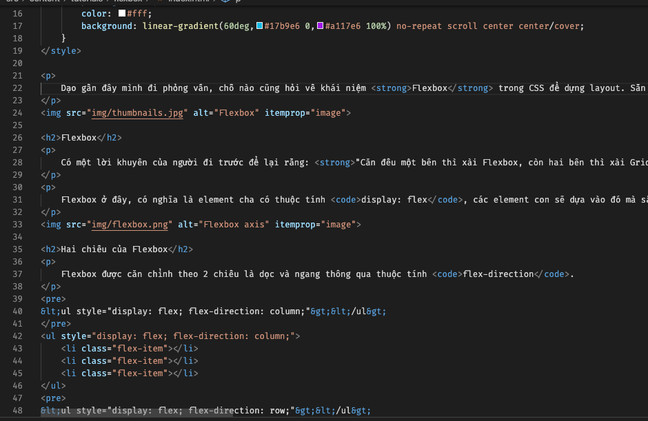
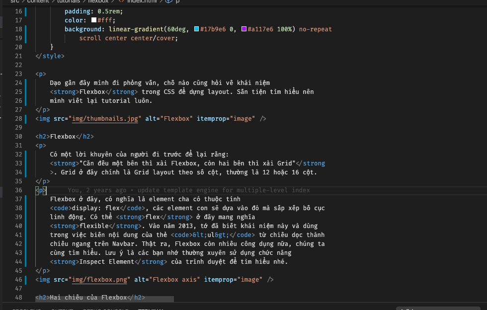

Format code với Prettier
Ngày 22 tháng 6 năm 2020
Chắc hẳn khi mọi người viết code đều dùng công cụ mặc định hoặc là dùng thư viện bên ngoài để format code. Trong đó có lẽ Prettier là các bạn dùng nhiều nhất. Bài viết hôm nay, mình sẽ chia sẻ với các bạn cách mình dùng Prettier.

Code Formatter là gì?
Phần này dành cho những bạn chưa biết, bạn thấy đoạn code dưới đây là code gốc.
Và sau khi chạy, nó sẽ ngay hàng thẳng lối như thế này.
Tích hợp với Visual Studio Code
Mình thường code bằng VSCode. Bình thường các bạn có thể dùng công cụ Format Document được tích hợp sẵn bằng cách bấm tổ hợp Command + Shift + F (MacOS) hoặc là Shift + Alt + F (thế giới còn lại).
Nếu bạn thích dùng Prettier thì bạn cứ vào phần Extension, gõ Prettier và chọn Prettier - Code formatter. Sau đó nhấn Install.
Trong quá trình sử dụng lần đâu, có thể sẽ xảy ra tranh chấp giữa Formatter mặc định và Prettier. Bạn sẽ được hỏi như hình sau đây.

Sau đó bạn chọn Prettier hay cái khác.

Nếu Visual Studio Code không có hỏi, bạn có thể vào Settings, gõ Default Formatter và chọn Default Formatter là ebsenp.prettier-vscode.

Cấu hình cho từng project
Nếu bạn không thích dùng một cấu hình của Prettier cho tất cả project. Bạn có thể tạo file .prettierrc đặt ở thư mục root của Project. Ví dụ rule như vậy.
Với cách ở trên, bạn chỉ cấu hình cho 1 loại file nhưng sẽ ảnh hưởng loại khác. Như đoạn code cấu hình trên là dành cho JavaScript, nhưng HTML cũng bị ảnh hưởng theo. Bạn có thể tham khảo ở đây để cấu hình cho 2 loại file khác nhau.
Cấu hình Pre-commit Hook
Nếu bạn lười thì có thể trước khi commit, sẽ chạy một lượt bằng cách cấu hình pre-commit hook. Bạn có thể tham khảo ở đây.
Mình thì theo trường phái xài pretty-quick. Đầu tiên, bạn cài package sau.
yarn add pretty-quick husky --dev
Sau đó, bạn config phần hook ở trong file package.json như sau.
Bỏ qua một số file
Bạn cứ việc tạo file tên là .prettierignore đặt ở thư mục root của project là được. Về mặt cú pháp thì nó tương tự .gitignore